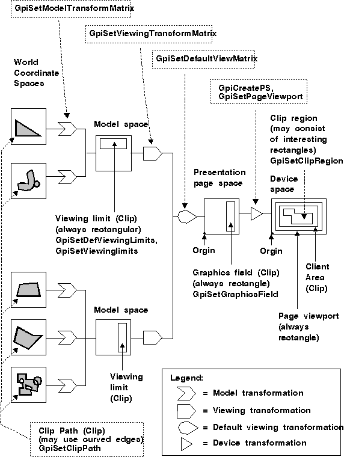

The coordinate spaces are connected by different transformation functions. In reality, the input coordinates of the world coordinate space are transformed directly into device coordinates in a single operation. The intermediate coordinate spaces exist only to provide a useful model to assist in the understanding of how to define the different transformation matrixes.
Transformation of graphic primitives occur when a transformation matrix is applied to those primitives. The individual transformations introduced here do not actually transform the primitives, but rather define portions of the transformation matrix. After all portions of the matrix are identified, the actual operation is performed in a single step.
The transformation functions manipulate graphics primitives as they move from one coordinate space to the next. Transformation functions usually begin with the letters Gpi. Most of the function names have a transformation type that identifies the entities on which it operates. For example, a model transformation is the transformation type that transforms graphics primitives between a world coordinate space and a model space. There is a 1-to-1 correspondence between these transformation types and the actual functions. The transformation matrix data structure is called MATRIXLF.
The following figure lists the sequence of coordinate spaces and the transformation types between the coordinate spaces. Internally, all transformations are combined, and the resulting values are held in the same format as the individual components. By default, there is no viewing window and no graphics field. The application can use the default page viewport. Clipping regions for each coordinate space are also shown.
Viewing Pipeline